| A | B | C | D | E | F | G | H | I | J | K | L | M | N | O | P | |
|---|---|---|---|---|---|---|---|---|---|---|---|---|---|---|---|---|
1 | ||||||||||||||||
2 | 사문디 작업 정보 (~7/26 일) | |||||||||||||||
3 | ||||||||||||||||
4 | 웹 아카이빙 작업 수합 (~8/21) | |||||||||||||||
5 | ||||||||||||||||
6 | 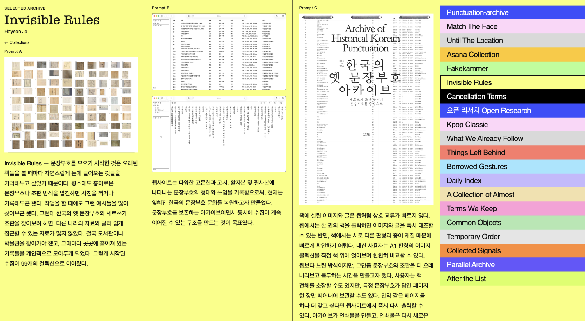 | 1. 위 드라이브 내 Prompt A, B, C >> 내부에 본인 이름 폴더에 사진 업로드 | ||||||||||||||
7 | 2. 시트에 본인 웹페이지 링크 공유 | |||||||||||||||
8 | Prompt A: 최대 세 장 Prompt B: 최대 세 장 Prompt C: 제한 없음 (비디오의 경우 mp4형태로 업로드) 파일형식 png / 파일명: 이름_1, 이름_2 이름_3 (순서대로 번호붙여서 업로드) | |||||||||||||||
9 | ||||||||||||||||
10 | * 진행중인 형식 (모든 작업을 참여자 별로 / A, B, C 프롬프트별로 동시에 분류하는 형식으로 작업중 | |||||||||||||||
11 | 이름 | 영문 이름 | 작품제목과 설명 (프롬프트별로 작성 혹은 통합하여 작성) | 아카이브 가능한(또는 아카이빙을 희망하는) 프롬프트 | 인스타 아이디 (희망하는 경우) | |||||||||||
12 | A - collection | B - Website | C - Hard copy | Web | A | B | C | |||||||||
13 | 1 | 이재원 | Jaewon Lee | 오픈 리서치 Open Research | Link | @zhotd | ||||||||||
14 | 리서치한 40개의 ‘오픈’ 키워드와 관련 내용을 스프레드시트에 정리하고, 메타데이터를 기준으로 분류했다. 이 과정에서 ‘오픈(Open)’과 ‘퍼블릭(Public)’의 개념을 구분하고, 사용자의 선택에 따라 두 범주 중 하나로 자동 분류되도록 코드를 구현했다. 또한 ‘오픈’이라는 주제에 맞게 누구나 접근하고 내용을 수정할 수 있도록 스프레드시트의 공개 범위를 설정했으며, 방문자가 의견을 남길 수 있는 방명록 기능도 함께 마련했다:https://docs.google.com/spreadsheets/d/1o-fsrGsJeDyI4Ues19hqsc1mwhVHINNFtx1RPkNhfHk/edit?usp=sharing | 리서치를 해석하는 과정에서 시각화를 위한 핵심 동사로 ‘선택하다’와 ‘펼치다’를 도출했다. 타공 테이프를 시각 모티프로 삼아 하나의 열에 하나의 키워드를 연결하고, 마우스를 가져다 대면 페이지가 열리고 구멍을 클릭하면 분류값이 바뀌게끔 설정했다. 추가로 카메라 기능을 넣어 열려 있으면서(=투명) 닫혀 있는(=불투명) 오픈의 개념을 드러내고자 했다. | 웹사이트에서의 핵심 동사인 선택하다’를 타공하는 행위로, 펼치다’를 물리적 펼치는 행위로 번역하고 이를 하드카피로 구현하였다. 페이지별로 길이를 다르게 만들어 웹사이트처럼 일종의 타공 테이프로 보이게끔 구상했고 순서가 없던 콘텐츠를 문장 길이에 맞게 재설정해 페이지별로 글감의 길이를 비슷하게 보이게끔 했다. 어디서든 프린트가 가능하게끔 대중적인 A4 판형을 사용했고 인쇄되지 않는 구와이 등을 고려해 여백을 10mm로 통일했다. 프로젝트 전 과정에 대한 보다 자세한 정보는 다음 링크를 참조: https://jaewwonlee.github.io/open/details/ | https://jaewwonlee.github.io/open/ | 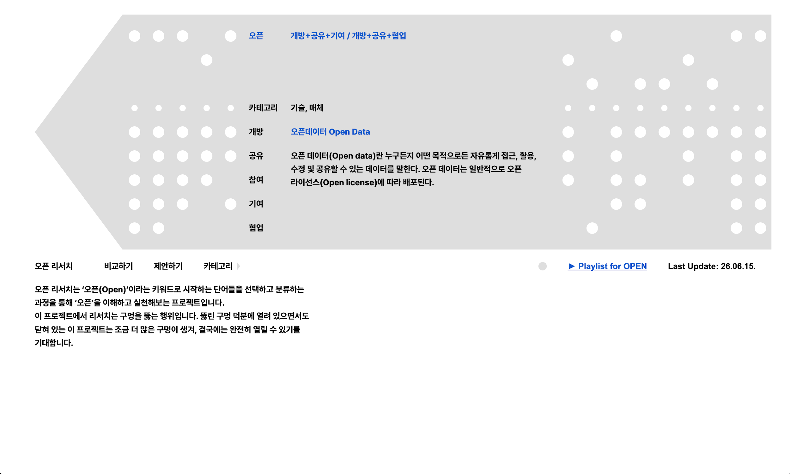 | |||||||||||
15 | 2 | 김민주 | Minju Kim | Fakekammer | Link | @imminjukim | ||||||||||
16 | 가짜(Fake): 진짜처럼 보이려고 꾸미거나 만들어 낸 것. 또는 진짜와 비슷하게 닮은 것. 이 아카이브는 한때 진짜로 믿어졌던 위조 문서와 유물, 허구의 경전, 지도, 문자들의 모음이다. 가짜를 진짜로 만드는 여러 요인을 분석하여 진짜와 가짜, 사실과 허구의 경계가 어떻게 만들어지고 흔들리는지를 조사한다. https://docs.google.com/spreadsheets/d/15vp4OiT8W5IxKHwi8AydB388TnTPU1dMgmVQkdVnyjQ/edit?gid=879117863#gid=879117863 | Fakekammer는 중세의 ‘경이의 방(Wunderkammer)’을 모티프로 한 가짜에 대한 아카이브 웹사이트이다. 관람객은 이미지 패널을 통해 조건에 맞는 이미지를 생성하고, 이미지를 재배치하면서 자신만의 Fakekammer를 만들 수 있다. 관람객은 화면을 이동하면서 이 아카이브를 탐색하게 되고, 이미지에 마우스를 올리면 해당 작품의 설명과 메타데이터가 나타난다. 자신만의 Fakekammer를 완성한 뒤, save image 버튼을 누르면 사용자의 현재 화면을 기준으로 이미지가 저장된다. 이미지에만 들어가는 워터마크 그래픽을 통해, 온라인 환경에서 이루어지는 수집과 복제, 그리고 이미지의 불안정한 진위성을 드러내고자 했다. | Fakekammer 웹사이트에서 print poster 버튼을 클릭하면, 관람객의 Fakekammer를 가변형 포스터로 제작할 수 있다. 작품 이미지에 커서를 둘 때 나오는 원래의 작품 순서 번호와 새로운 카테고리 프레임이 적용된다. 새로운 카테고리는 주요 항목인 현재 상태(Present Status)와 가치 종류(Value Type)를 기반으로 만든 25개의 카테고리이다. 현재 상태와 가치에 따른 새로운 의미를 부여하여, 가짜의 의미와 가치를 제시한다. | https://imminjukim.github.io/fakekammer/ | 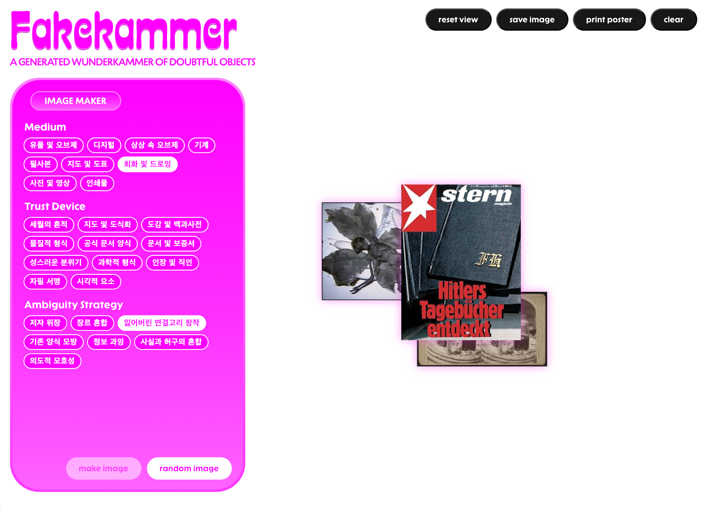 | |||||||||||
17 | 3 | 이다빈 | Dabin Lee | Unfinished Archive | Link | @eeladniv | ||||||||||
18 | Unfinished Archive는 학생들의 여러 이유로 중단된 프로젝트의 조각들을 수집한다. 웹은 중단되어 더 이상 실현되지 못한 아이디어들이 상자처럼 어지럽게 쌓여 있는 모습을 떠올리며 제작했다. 사용자는 상자를 눌러 다른 사람의 작업과 아이디어를 엿볼 수 있으며, 그중 인상 깊은 문장이나 아이디어는 저장할 수 있다. 또한 댓글 기능을 통해 자신의 생각을 남기고 다른 사용자와 의견을 나눌 수 있도록 구성했다. 이를 통해 사라질 수도 있었던 작은 아이디어를 기록하고 공유하며, 또 다른 창작의 시작점으로 이어질 수 있기를 기대한다. | 웹에서 수집한 아이디어와 문장들은 영수증의 형태로 출력할 수 있다. 영수증에는 사용자가 클릭하여 열람한 프로젝트와 저장한 프로젝트의 기록이 시간 정보와 함께 인쇄된다. 이를 통해 웹에서의 탐색 과정 자체가 하나의 물리적인 아카이브로 남으며, 흩어져 있던 아이디어를 손에 남는 기록으로 이어지도록 했다. | 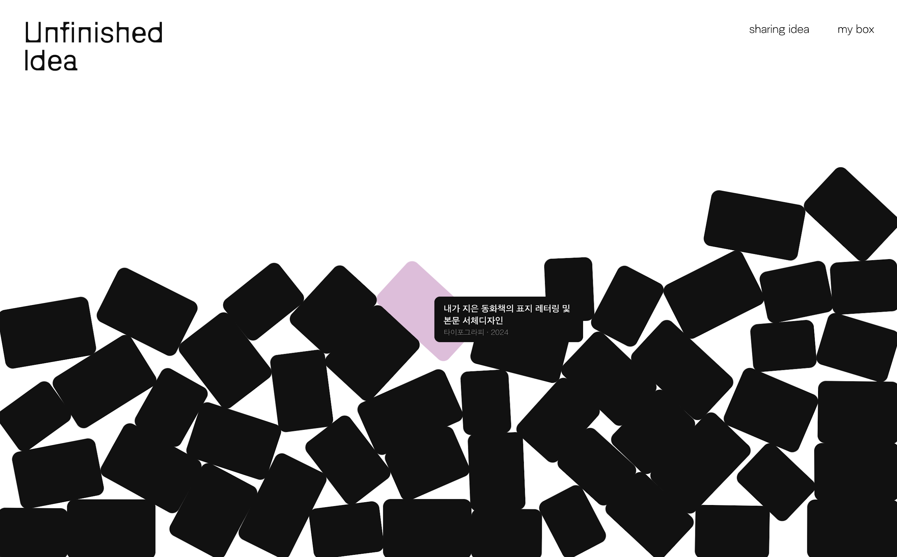 | |||||||||||||
19 | 4 | 이상민 | Sangmin Lee | Time-zipper | Link | @3mann.e | ||||||||||
20 | 구글 트렌드 검색 기능을 활용해, 산모형 그래프를 기준으로 유행이 지난 아이템의 메타데이터를 수집한다. | 수집한 데이터를 바탕으로, 사용자가 직접 카드를 스와이프하며 자신이 아는 유행을 수집할 수 있는 웹사이트를 제작한다. | 웹사이트의 결과를 바탕으로, 수집한 데이터를 그래프화하여 물리적으로 간직할 수 있는 시스템을 추가한다. 이때, 프린트 CSS를 적극적으로 활용한다. | 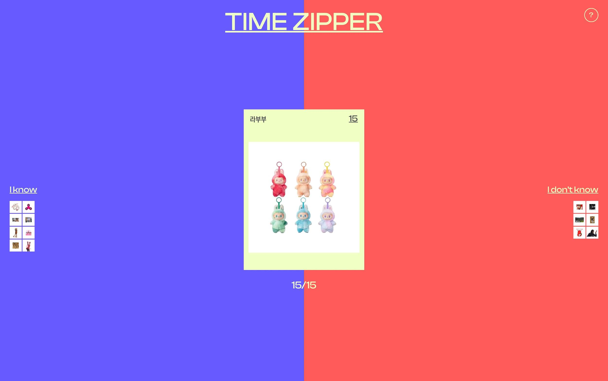 | ||||||||||||
21 | 5 | 김승민 | Seungmin Kim | Cancellation Terms | Link | @oscarkim_05 | ||||||||||
22 | 다양한 구독 경제 서비스의 해지 약관 데이터베이스를 구축하는 작업을 하였다. 기업의 서비스 성격과 가격대뿐만 아니라, 약관 전문과 함께 웹사이트 내에서의 글자 크기, 자간, 행간, 배경색 등 시각적 스타일 요소를 다각도로 분석하여 기록하였다. 초기에는 이 시각적 스타일과 다크 패턴 요소까지 포함하여 약관이 사용자에게 노출되는 환경을 파악하는 데 집중하였다. 이를 통해 이후 단계에서 다룰 방대한 원천 데이터를 확보하고, 해지 약관의 구조적 특징을 입체적으로 수집하는 기틀을 마련하였다. https://docs.google.com/spreadsheets/d/1XpMopJdNPNREbfVYSX0fMpUDanTOUpqHBcin6wnjSu8/edit?usp=sharing | 수집한 해지 약관 데이터를 사용자가 직접 마주하고 통과하는 디지털 경험으로 재구성하였다. 방대한 텍스트와 끊임없이 개입하는 시각적 정보 사이에서 사용자의 시선이 어디에 머물고, 무엇을 놓치게 되는지를 탐구하였다. 이를 통해 해지 과정에서 정보의 과잉과 주의 분산이 사용자의 판단과 선택에 어떤 영향을 미치는지 드러내고자 하였다. 이 웹사이트는 쉽게 지나쳐지는 약관을 다시 인식하게 함으로써, 우리가 동의하고 해지하는 과정에서 실제로 무엇을 읽고 있는지 질문한다. | 웹사이트의 인터랙션을 플립북이라는 물리적 책 형태로 전이시켜, 종이를 넘기는 행위 속에서 정보가 어떻게 변화하는지 시각화하였다. 페이지를 넘길 때마다 붉은색 단어 블록들이 증식하여 본래의 정갈한 명조체 텍스트를 가리게 되며, 후반부로 갈수록 페이지는 무수한 색상 픽셀들로 가득 차 가독성이 완전히 상실된다. 사용자는 텍스트를 등한시한 대가로 무엇이 중요한 정보인지 구분할 수 없는 상태에 직면하게 된다. 결국 이 하드카피는 휘발되는 디지털 데이터를 실물 책으로 박제함으로써, 무관심 속에 방치된 약관 정보가 어떻게 사용자의 시야를 잠식하고 압도하는지 그 과정을 손끝으로 감각하게 만든다. | https://oscarkim0531.github.io/RDS1_2026_FINAL/ | 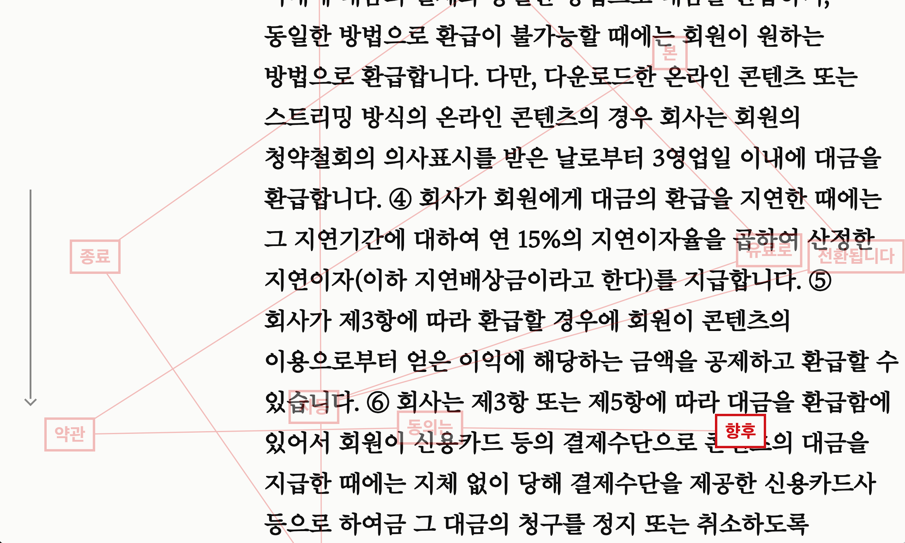 | |||||||||||
23 | 6 | 김나현 | Nahyun Kim | 세로쓰기 문장부호 | Link | @bonenlem | ||||||||||
24 | 문장부호를 모으기 시작한 것은 오래된 책들을 볼 때마다 자연스럽게 눈에 들어오는 것들을 기억해두고 싶었기 때문이다. 평소에도 흥미로운 문장부호나 조판 방식을 발견하면 사진을 찍거나 기록해두곤 했다. 작업을 할 때에도 그런 예시들을 많이 찾아보곤 했다. 그런데 한국의 옛 문장부호와 세로쓰기 조판을 찾아보려 하면, 다른 나라의 자료와 달리 쉽게 접근할 수 있는 자료가 많지 않았다. 결국 도서관이나 박물관을 찾아가야 했고, 그때마다 곳곳에 흩어져 있는 기록들을 개인적으로 모아두게 되었다. 그렇게 시작된 수집이 99개의 컬렉션으로 이어졌다. | 웹사이트는 다양한 고문헌과 고서, 활자본 및 필사본에 나타나는 문장부호의 형태와 쓰임을 기록함으로써, 현재는 잊혀진 한국의 문장부호 문화를 복원하고자 만들었다. 문장부호를 보존하는 아카이브이면서 동시에 수집이 계속 이어질 수 있는 구조를 만드는 것이 목표였다. | 책에 실린 이미지와 글은 웹처럼 상호 교류가 빠르지 않다. 웹에서는 한 권의 책을 클릭하면 이미지와 글을 즉시 대조할 수 있는 반면, 책에서는 서로 다른 판형과 종이 재질 때문에 빠르게 확인하기 어렵다. 대신 사용자는 A1 판형의 이미지 콜렉션을 직접 책 위에 얹어보며 천천히 비교할 수 있다. 웹보다 느린 방식이지만, 그만큼 문장부호와 조판을 더 오래 바라보고 몰두하는 시간을 만들고자 했다. 사용자는 책 전체를 소장할 수도 있지만, 특정 문장부호가 담긴 페이지 한 장만 떼어내어 보관할 수도 있다. 만약 같은 페이지를 하나 더 갖고 싶다면 웹사이트에서 즉시 다시 출력할 수 있다. 아카이브가 인쇄물을 만들고, 인쇄물은 다시 새로운 수집의 대상이 된 것이다. | 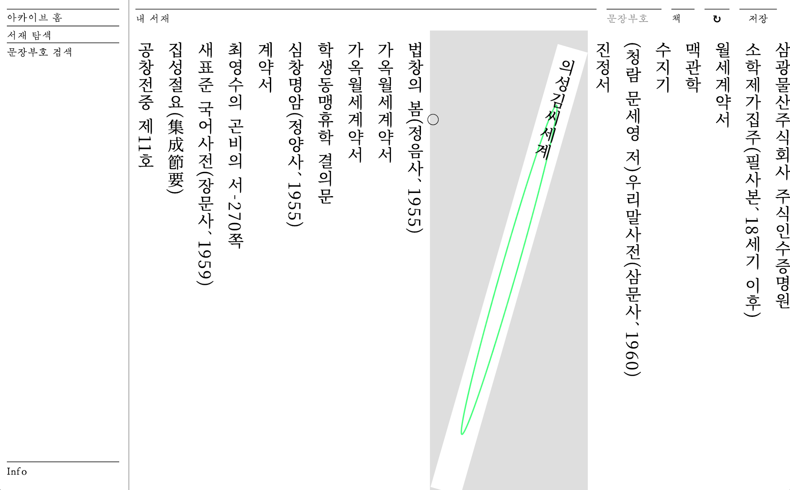 | ||||||||||||
25 | 7 | 안가은 | Gaeun An | Asana Collection | Link | @gaeun_an | ||||||||||
26 | 작업 캡션>>>> (프롬프트별로 작성안하지않고 통합해서 작성해도됩니다) | 요가 수련실은 오래된 철학적 원형의 산스크리트어와 이를 번역한 여러 명칭이 공존하는 언어적 공간이다. 요가의 다양한 동작들은 은유적 언어들로 번역되는데, 이 과정에서 자연스럽게 유연성은 ‘여성성’과, 힘은 ‘남성성’과 결합하는 현상을 목격할 수 있다. 유연함은 여성적인 것이며, 힘과 근력은 남성적인 것인가? 산스크리트어로 된 요가 자세가 한국어로 번역되는 과정에서, 동작의 의미는 새로운 이미지와 서사를 함께 획득한다. 작업은, 서로 다른 언어로 동작을 번역하는 과정에서 발생하는 의미의 이동과 변형을 알아봄으로써, 언어가 신체 경험을 어떻게 규정하고 상상하게 만드는지 알아본다. 컬렉션은 현대 요가의 체계를 정립한 텍스트로 평가받는 B.K.S. 아이엔가의 『요가 디피카(Yoga Dipika)』를 기준으로 아사나의 명칭을 목록화한다. A. Collection에서는 동작과 언어의 객관적인 궤적을 수집하는 데 집중한다. 이는 수천 년간 축적된 요가의 움직임과 언어의 관계를 구조화하기 위한 기초 작업이다. | 이 웹에서 ‘힘(Strength)’은 클릭에 대응하고, ‘유연성(Flexibility)’은 드래그에 대응한다. 요가 수련 여부와 관계없이 사용자는 화면 속 아사나 사진을 마주하고, 특정 신체 부위 위를 직접 클릭하거나 드래그하며 동작의 어느 곳에 어떤 에너지가 쓰이는지 탐색하게 된다. | 웹에서의 인터랙션(클릭과 드래그)은 인쇄물에서 '접기(Folding)'와 '말기(Rolling)'라는 새로운 신체 행위로 다시한번 치환된다. 표지의 가이드를 따라 사용자는 자유롭게 종이를 접고 말아본다. | https://ga-eun-an.github.io/Asana.collection/ | 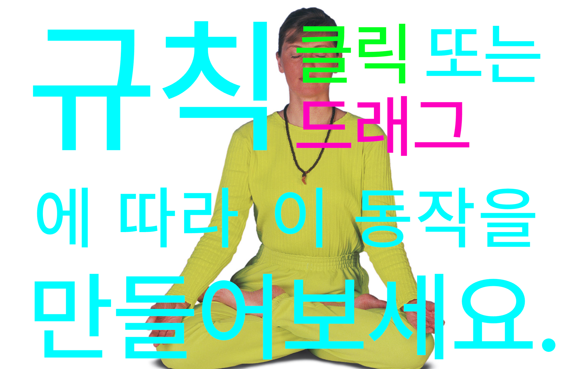 | ||||||||||
27 | 8 | 김진규 | Jinkyu Kim | Until The Location | Link | @jinkyu.9 | ||||||||||
28 | 기술의 발전은 우리를 더 얕고 단축된 결과물로 이끌게 되는데, 이제 가장 작은 손 끝의 움직임만으로 즉각적인 결과물을 얻을 수 있게되었다. 이 과정 속에서 탐색과 관찰은 생략되고 나아가 배제되게 되며, 우리는 시작과 끝 사이의 과정을 알 수 없는 채로 결과만을 맞이하게 된다.Until the Location은 그러한 기술 중 추상적인 파란 마크로 특정되는 지도 어플리케이션의 위치,GPS기술의 드러나지 않는 과정들에 대한 아카이브이다. 우리가 현재 위치해있는 장소와 움직임의 경로 속에서 무엇이 생략되고, 어떤 과정을 거쳐 우리 눈에 즉각적인 기호로 표시되게 되는 것인가. 사용자는 웹사이트와 인쇄물을 통해 결과가 되기 이전의 정보와 경로를 탐색하며, 기술의 발전으로 인해 우리가 놓치고 있는 단축된 과정에 대해 생각해본다. | 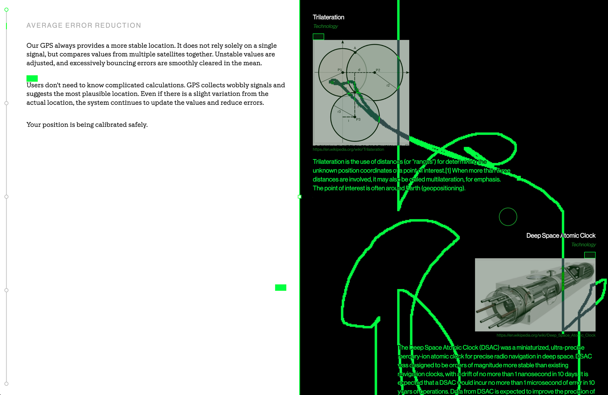 | ||||||||||||||
29 | 9 | 전아영 | Ayoung Chon | Glut | Link | @ayouiee, @a0chive | ||||||||||
30 | 〈환승연애4〉를 시청하다 오히려 이탈했던 경험에서 출발해, '자극이 지나치면 왜 사람은 콘텐츠로부터 멀어지는가'라는 질문을 설정했다. 자막, 음악, 편집 등 시청을 유도하는 연출 방식을 분석하며 도파민의 축적, 더 강한 자극의 추구, 무감각과 피로, 그럼에도 소비를 반복하는 순환 구조를 정리했다. 이를 바탕으로 콘텐츠 메타데이터와 도파민을 형성하는 조형 언어를 기준 삼아 자연 다큐멘터리를 대조군으로 선정하고 분석 대상을 구성했다. | 웹사이트는 도파민 소비 구조를 각각 다른 인터페이스로 시각화한 여섯 개의 결과물로 구성했다. Index 페이지는 무작위 ASCII 그래픽을 통해 무의미하게 범람하는 자극을, Landing 페이지는 붕괴된 UI를 통해 매끈한 도파민을 걷어낸 거친 이미지를 시각화했다. HTML1은 예능 자막의 과잉을, HTML2는 MediaPipe를 활용해 얼굴을 이모지로 치환하며 감정을 은폐하고자 했다. HTML3은 위키백과 UI를 변형해 정보 전달을 방해하고 HTML4는 2006년 유튜브 인터페이스를 차용해 과거의 미디어 환경을 재구성했다. 모든 화면은 Print CSS를 통해 출력물로 확장할 수 있도록 했다. | 하드카피는 디지털 화면 속 도파민 뭉치를 손으로 쥘 수 있는 물질로 전환하는데에 집중했다. 삐라와 전단지처럼 가볍고 쉽게 배포되는 형식을 참고해 신문지 질감의 A4 인쇄물로 제작했으며, 관람자가 웹사이트를 직접 체험한 뒤 자신의 결과물을 즉석에서 출력해 원하는 만큼 가져갈 수 있도록 했다. | 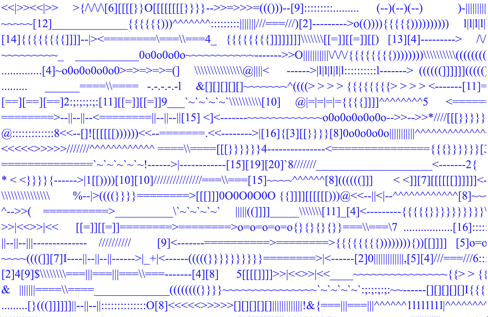 | ||||||||||||
31 | 10 | 이시현 | Sihyeon Lee | Match The Face | Link | @2.s.hi | ||||||||||
32 | 같은 신체를 지녔더라도 기억이 변하거나 단절되는 순간, 더 이상 이전의 ‘나’와 같은 사람이라고 정의할 수 있는가. 영화, 드라마 속 타임루프, 다중우주, 기억 조작 서사를 아카이브화해 기억의 연속성이 한 인물의 정체성을 어떻게 규정하고 분기시키는지 탐구한다. Prompt A에서 구축한 16편의 영화 속 36명 인물의 메타데이터를 바탕으로 웹 인터페이스는 블러 처리된 인물 카드와 분할된 얼굴 조각을 매칭하는 퍼즐 게임 형식으로 사용자가 직접 분기된 자아들을 연결해보도록 유도한다. 매칭에 성공한 인물은 Preview/Download PDF를 통해 Prompt C의 출력용 진으로 확장된다. 웹에서 맞춰진 얼굴 퍼즐 구조가 가로로 긴 지면에 접히는 레이아웃으로 재현되어, 디지털 인터페이스에서 시작된 경험을 물리적 인쇄물까지 확장해 소장할 수 있다. | https://leesihyeon.xyz/MATCH_THE_FACE/ | 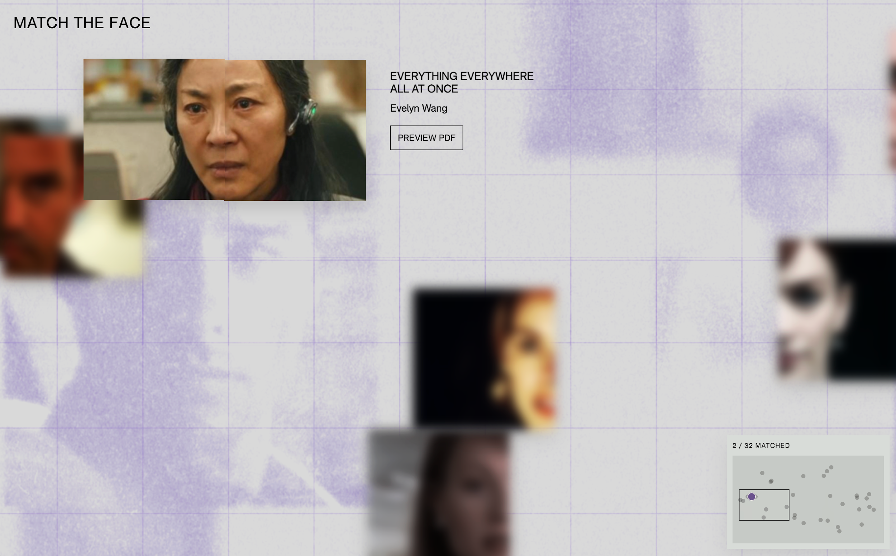 | |||||||||||||
33 | 11 | 허지민 | Jimin Hur | What We Already Follow | Link | @jimin.h.k | ||||||||||
34 | 우리는 스스로 많은 것을 선택한다고 생각하지만, 이미 수많은 규칙과 시스템 속에서 행동하고 있다. 이 작업은 일상 속에서 무의식적으로 따르고 있는 지시와 규범들을 수집하고 재구성한 아카이브이다. 사용자는 웹사이트, 인쇄물을 오가며 정보를 찾고 해석해야 하며, 그 과정 자체가 또 하나의 시스템을 따르는 경험이 된다. 결국 이 작업은 규칙을 설명하는 것이 아니라, 우리가 이미 어떤 체계 안에서 행동하고 있다는 사실을 경험하게 만드는 작업이다. | 웹사이트는 ‘Print’와 ‘Don’t Print’라는 두 가지 경로로 시작된다. 사용자는 이 첫 선택을 통해 서로 다른 방식으로 컬렉션에 접근하게 된다. ‘Print’를 선택한 사용자는 단순히 파일을 다운로드하는 것이 아니라, 화면의 지시에 따라 출력물을 직접 완성하는 과정을 거친다. 이 출력물은 이후 컬렉션을 해석하기 위한 중요한 매개체가 되며, 웹사이트와 책을 연결하는 장치로 작동한다. 즉, 사용자는 시스템이 요구하는 절차를 수행한 뒤에야 컬렉션의 구조와 이미지의 의미를 보다 온전히 이해할 수 있다. 반면 ‘Don’t Print’를 선택한 사용자는 컬렉션 자체에는 접근할 수 있지만, 출력 문서가 없기 때문에 이미지가 지닌 의미와 연결 구조를 완전히 해석할 수 없다. 이는 정보를 얻기 위해서는 먼저 시스템이 제시하는 규칙과 절차를 따라야 한다는 점을 드러내기 위한 설계이다. 결국 이 구조는 사용자가 시스템의 요구를 수락했을 때와 거부했을 때의 경험 차이를 만든다. ‘Print’는 이해를 위한 조건이 되고, ‘Don’t Print’는 접근은 가능하지만 해석은 불완전한 상태로 남게 한다. 이를 통해 웹사이트는 사용자가 정보를 얻기 위해 이미 어떤 절차에 순응하고 있는지를 보여준다. | https://jiminhur.github.io/ jimin.h.kr_would_you_comply_RSD3/ | 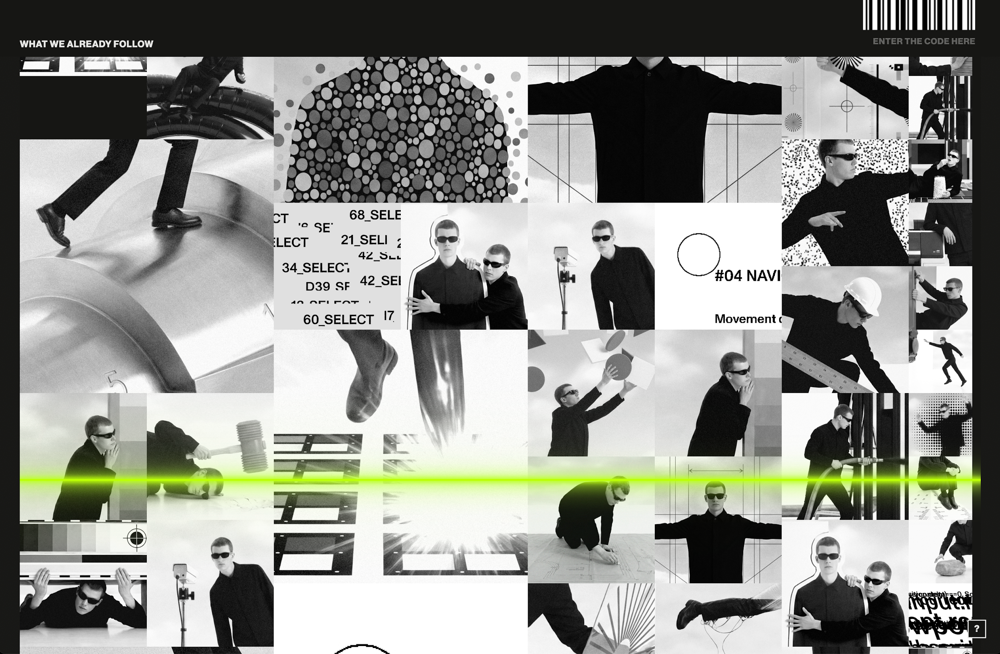 | ||||||||||||
35 | 12 | 김예영 | Yeyoung Kim | Kpop Classic | Link | @ynennng | ||||||||||
36 | 오랜 시간이 지나도 기억되고 재생되어 클래식이 된 케이팝 곡들을 모아 각 그룹의 로고를 재해석하고, 클래식 악보의 오선지 위에 배열하였다. CD케이스 위로 자동 스크롤되는 로고가 중앙에 위치하는 순간 각 그룹의 앨범이 되고, 사용자는 로고에 링크된 무대영상을 통해 앨범을 직접 재생해볼 수 있게 된다. | 웹에서 재생할 수 있는 각 그룹의 앨범 중 첫번째 그룹인 S.E.S.의 앨범을 실제 매체로 구현하였다. 대중음악의 첫 재생도구였던 Lp의 판형위에 지금까지 쓰이고있는 Cd케이스를 담은 커버 이미지를 디자인하고, 재생 방식으로는 qr코드를 통한 스트리밍을 선택함으로써 시대에 따라 달라지는 음반의 3단계 형태변화를 모두 담은 앨범을 제작하였다. | https://yengkim.github.io/kpopclassic/ | 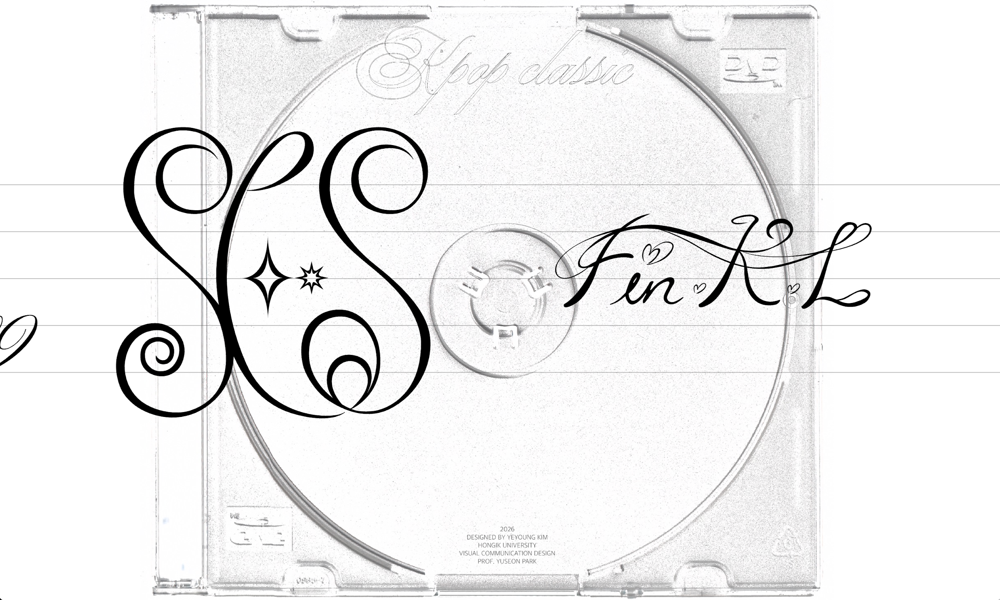 | ||||||||||||
37 | 13 | 조호연 | Hoyeon Jo | Invisible Rules | Link | @ho.garden_ | ||||||||||
38 | Invisible Rules는 프랑스에서 생활하며 발견한 보이지 않는 사회적 규칙을 수집하고 분류한 아카이브 작업이다. 인사 방식, 식사 예절, 공공장소에서의 행동처럼 명확히 안내되지 않지만 구성원 사이에서 자연스럽게 공유되는 38가지 규칙을 관찰과 직접 경험을 통해 기록했다. 각 규칙은 발견 방식, 인식 시점, 행동의 가시성, 언어화 가능성 등의 기준에 따라 분류된다. 이를 통해 일상적인 행동 뒤에 존재하는 문화적 약속과, 외부인이 규칙을 학습하는 과정을 드러낸다. | 웹사이트는 사용자가 보이지 않는 규칙을 단번에 전달받는 것이 아니라, 단서를 따라 직접 발견하도록 설계한 디지털 탐색 공간이다. 메인 화면에서 이미지를 호버하면 프랑스에서 촬영한 장면의 일부가 나타나고, 클릭하면 상황과 규칙이 드러난다. 호버 단계에서는 규칙을 완전히 이해할 수 없으며, 여러 장면을 탐색하고 클릭하는 과정을 통해 점차 의미를 파악하게 된다. 아카이브 페이지에서는 메인 화면에서 단편적으로 접한 38가지 규칙을 정리된 텍스트와 메타데이터로 다시 확인할 수 있다. | 하드카피는 웹사이트에서 발생하는 탐색의 흔적과 수집된 규칙을 인쇄물로 변환한 결과물이다. 메인 페이지에서 사용자가 호버하거나 클릭하며 마주하는 이미지의 중첩과 노출 정도를 종이 위에 재구성해, 규칙을 알아가는 불완전한 과정을 시각화했다. 함께 제작한 접지형 아카이브에는 38가지 규칙과 분류 기준, 메타데이터를 수록했다. 디지털 화면에서 흩어져 있던 단서들이 인쇄물에서는 하나의 체계적인 기록물로 정리된다. | https://hoyeonjo01.github.io/invisible/ | 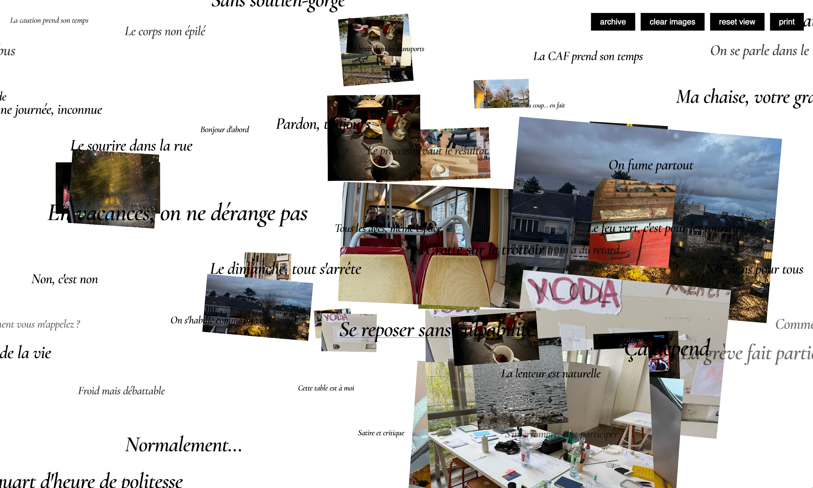 | |||||||||||